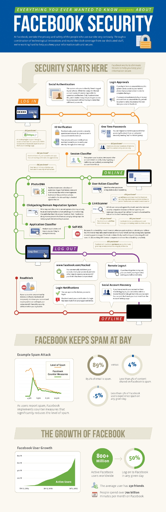
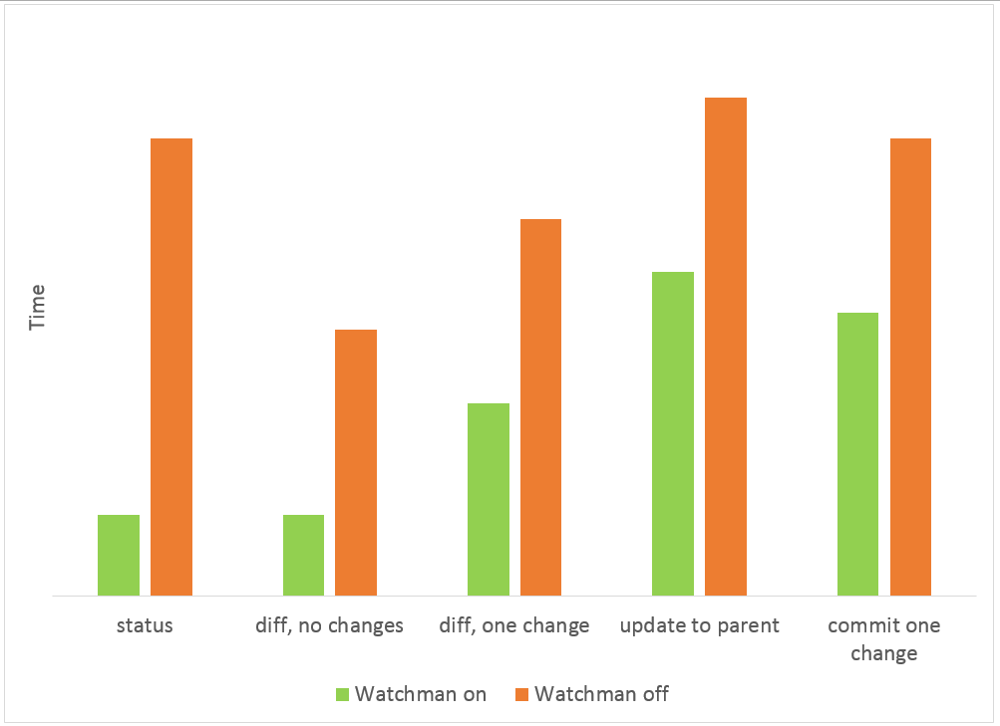

Facebook has become an incredibly popular website with over 350 million active users, with more than 35 million users updating their statuses each day (via Random History). There are even up to 600,000 attempts to hack Facebook accounts every day (via The Telegraph). With an extraordinary number of users and attempts to access someone else’s account each day Facebook has had to make sure their code and frameworks are top of the line.

(via Facebook Scribd)
Facebook uses Javascript for their front-end software, like most popular websites (via Wikipedia). On the back-end, or server side, Facebook uses PHP and a specific dialect of PHP they developed called “Hack.” PHP is a dynamically typed language, while hack allows programmers to use both dynamic and static typing. Hack was developed to seamlessly interoperate with PHP. Hack was released for HHVM and the top 20 open source frameworks on GitHub run on HHVM (via HHVM). As for databases, Facebook uses MySQL and Cassandra, a database management system developed by Facebook. “Cassandra is a distributed storage system for managing structured data that is designed to scale to a very large size across many commodity servers.” According to Avinash Lakshman, Cassandra had met many of these goals by 2008, such as scalability, high performance, high availability, and applicability (via Facebook).
Not only does Facebook use many different types of Open Source Software, such as GitHub, they also release many. Cassandra, which I’ve already mentioned is one of these projects. Others include:
and many more (via VentureBeat).
Facebook deploys code every day. They begin to push the code out by cutting one branch and pushing it to production. Taking advantage of continuous deployment they push smaller pieces of code twice a day which is easier to test. Doing this every day Facebook developers average approximately 12,000 commits per month. Something unique to Facebook is that when the developers push the code they’re only half done, because they have to keep up to date and make sure the code/changes don’t break the site. As opposed to other companies whom have special teams dedicated to this process (via Info Q).
Facebook’s main repository uses Subversion with a Git mirror, while many of the engineers use Git locally to create their own branches. As their code grew with over 44,000 files and 17 million lines of code in 2013, Facebook had to look to a new source control tool: Mercurial. Mercurial has many of the similar features as Git, and is written in mostly clean Python (via Facebook Code). Facebook also uses Watchman, an open source service developed by Facebook to watch files and record any changes. Enabling Watchman made Mercurial’s status command more than 5x faster than Git’s status command (via Facebook GitHub).

(via Facebook Code)
Facebook uses Akamai for their content delivery network. Akamai also services other big companies such as Apple and Twitter (via Wikipedia). Facebook receives up to 13 million queries per second, so they need a CDN like Akamai to help their in-house servers (via High Scalability). There are also over 900 billion objects that people interact with (pages, groups, events) and more than 30 billion pieces of content (web links, news stories, blog posts, notes, photo albums, etc) (via SlideShare). Without the proper CDN provider, none of this would be kept consistently possible.